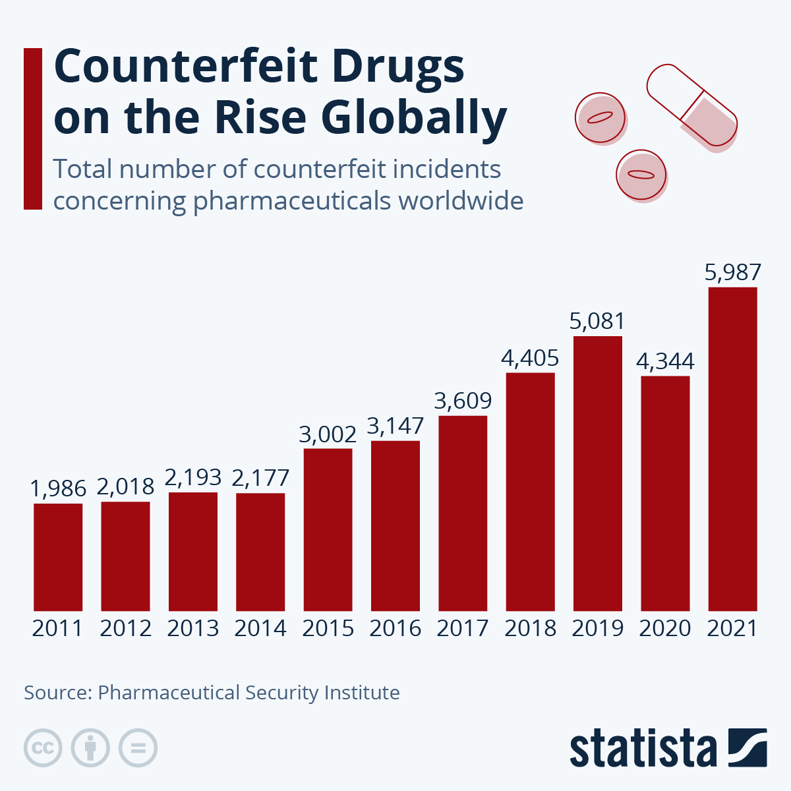
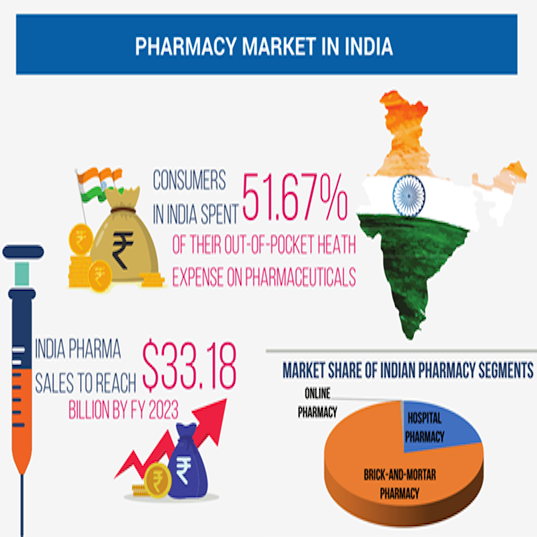

Top News
WHO's New Strategy for Medical Product Quality Control
The WHO has launched a comprehensive global strategy to improve the testing and verification of medical products.
FDA Ramps Up Medicine Testing During COVID-19
The FDA has increased testing efforts for medicines to ensure safety during the pandemic.

A Surge in Fake Medicines Online
Experts are calling for stricter regulations in the face of increasing counterfeit drugs available online.
Latest News

Quality Assurance in Online Medical Testing
This article reviews essential quality assurance measures for online medical testing services.
Global Vaccine Quality Testing
Explores global efforts to maintain high standards for vaccine testing.

Impact of Online Drug Sales on Public Health
This article discusses the risks of growing online pharmacies.
Research Highlights
Research on Drug Quality Assurance
This study examines the current state of drug quality assurance worldwide.

Innovations in Medicine Testing Techniques
Explore the latest innovations in testing techniques for medical products.